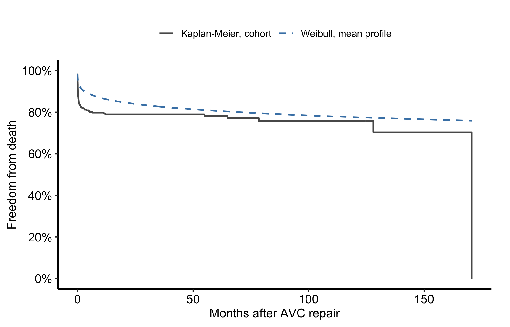
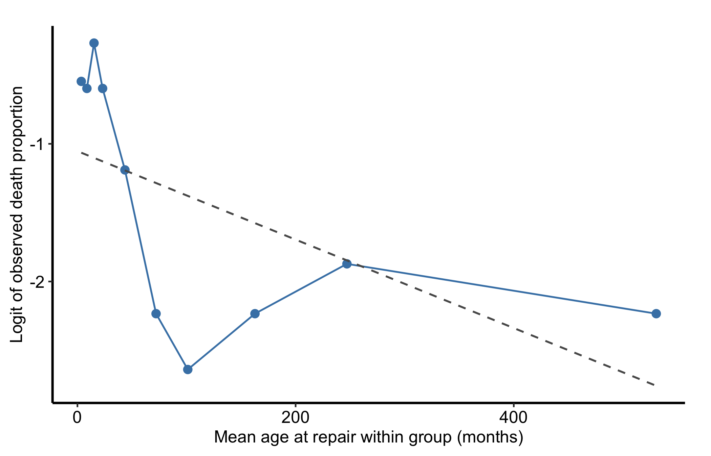
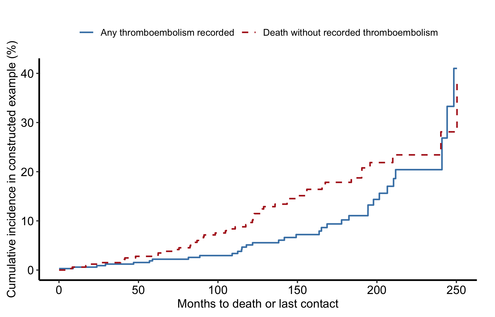

A smooth curve is not evidence of a faithful model. Once the optimizer has converged, we still have five decisions to make. Does the fitted shape follow the empirical survival? Is a continuous covariate sensible on the scale we gave it? Does predicted risk agree with observed experience across the cohort? Would variable selection or resampling tell a different story? And have we defined competing outcomes with the right risk set?
These checks form a sequence, not a collection of stamps to put on a model. Global misfit sends us back to the hazard shape. Curvature in a grouped functional-form check sends us back to the covariate transformation. Poor decile agreement sends us back to the linear predictor or baseline hazard. Unstable selection or bootstrap estimates tell us to simplify the model or collect more information. None of them turns an observational association into a causal effect.
Everything here uses public data bundled with TemporalHazard(Ehrlinger 2026). The chapter is independently runnable and requires no patient extract.
24.2 Refit the reviewed model
The AVC example follows 305 complete records after atrioventricular canal repair. Follow-up is in months. We refit the reviewed Weibull model so every diagnostic below refers to one known object and one analysis cohort.
data(avc, package ="TemporalHazard")avc <-na.omit(avc)fit <-hazard( survival::Surv(int_dead, dead) ~ age + status + mal + com_iv,data = avc,dist ="weibull",theta =c(mu =0.20, nu =1.0, rep(0, 4)),fit =TRUE,control =list(maxit =500))data.frame(records =nrow(avc),deaths =sum(avc$dead),maximum_follow_up_months =max(avc$int_dead),converged = fit$fit$converged,log_likelihood = fit$fit$objective)
Stop here if converged is not TRUE. A diagnostic cannot repair a fit that never reached its optimum.
24.3 Does the overall shape fit?
hzr_gof() places the fitted Weibull survival beside the Kaplan-Meier estimate and accumulates observed and expected events over follow-up. With covariates in the model, the parametric curve is evaluated at the mean design values. The Kaplan-Meier curve is marginal over the cohort. Thus this is a first-pass shape and conservation check, not patient-specific calibration.
records observed_events expected_events_at_mean_profile
1 305 68 50.43254
final_residual_expected_minus_observed
1 -17.56746
ggplot() +geom_step(data = gof,aes(time, km_surv *100, colour ="Kaplan-Meier, cohort",linetype ="Kaplan-Meier, cohort"),linewidth =0.75 ) +geom_line(data = gof,aes(time, par_surv *100, colour ="Weibull, mean profile",linetype ="Weibull, mean profile"),linewidth =0.75 ) +scale_colour_manual(values =c("Kaplan-Meier, cohort"="grey35","Weibull, mean profile"="steelblue"),name =NULL ) +scale_linetype_manual(values =c("Kaplan-Meier, cohort"="solid","Weibull, mean profile"="dashed"),name =NULL ) +scale_y_continuous(limits =c(0, 100), breaks =seq(0, 100, 20),labels =function(x) paste0(x, "%")) +labs(x ="Months after AVC repair", y ="Freedom from death") +theme_hv_manuscript() +theme(legend.position ="top")

Figure 24.1: Kaplan-Meier survival for the AVC cohort compared with Weibull survival evaluated at the mean covariate profile
The curves differ, and the summary reports fewer expected events at the mean covariate profile than were observed in the cohort. Those quantities have different estimands: one is conditional on a single reference profile, while the other is marginal over the cohort. The discrepancy therefore demonstrates an estimand mismatch, not underprediction or a misspecified hazard shape. Before concluding that the model is miscalibrated, standardize predictions over the cohort or use a subject-specific check such as the decile observed-to-expected comparison below.
24.4 Is age sensible on the logit scale?
The name hzr_calibrate() comes from the historical grouped-screening workflow, but its current contract is narrower than a fitted survival-model calibration. It bins a continuous x, counts a binary event within each group, and transforms that observed proportion. It does not use event time or censoring. Here it asks whether eventual death is roughly linear in age on the logit scale, which is a functional-form screen for the next model fit.
cal <-hzr_calibrate(x = avc$age,event = avc$dead,groups =10,link ="logit")cal
ggplot(cal, aes(mean, link_value)) +geom_point(size =2.4, colour ="steelblue") +geom_line(colour ="steelblue", linewidth =0.6) +geom_smooth(method ="lm", formula = y ~ x, se =FALSE,colour ="grey35", linetype ="dashed", linewidth =0.65) +labs(x ="Mean age at repair within group (months)",y ="Logit of observed death proportion") +theme_hv_manuscript()

Figure 24.2: Observed binary death proportion by age group, shown on the logit scale as a functional-form check
Strong curvature would argue for a transformation, spline, or clinically defined age categories before refitting. A straight pattern would support a linear age term, but it would not prove that the full survival model is calibrated.
24.5 Does risk-group agreement hold?
hzr_deciles() asks a different question. It ranks all 305 patients by predicted survival at 120 months and divides them into ten nearly equal groups. The horizon defines the ranking only. Within each group, observed events use each patient’s full follow-up and expected events sum predicted cumulative hazard at each patient’s own follow-up time. No patient is excluded for having less than 120 months of observation.
dec <-hzr_deciles(fit, time =120, groups =10)dec_overall <-attr(dec, "overall")data.frame(risk_horizon_months = dec_overall$time,included = dec_overall$n_included,excluded = dec_overall$n_excluded,observed_events = dec_overall$total_events,expected_events = dec_overall$total_expected,chi_square = dec_overall$chi_sq,degrees_freedom = dec_overall$df,p_value = dec_overall$p_value)
Figure 24.3: Full-follow-up observed and expected event rates within groups ranked by predicted 120-month risk
The omnibus result is compatible with agreement across these groups, but a non-significant test is not proof of calibration. Read the group sizes and the observed-versus-expected pattern with the statistic. Sparse events and the choice of groups both limit what this check can see.
24.6 Does automated selection tell a stable story?
For the selection demonstration, we start from the reviewed early-plus- constant model. The scope is phase-specific, so age can enter the early phase without being forced into the constant phase. We request two-way selection with the refit-based Wald criterion and keep the optimizer bounded.
base_mp <-hazard( survival::Surv(int_dead, dead) ~1,data = avc,dist ="multiphase",phases =list(early =hzr_phase("cdf", t_half =0.5, nu =1, m =1,fixed ="shapes" ),constant =hzr_phase("constant") ),fit =TRUE,control =list(n_starts =3, maxit =500))selection_warnings <-character()selected <-withCallingHandlers(hzr_stepwise( base_mp,scope =list(early =~ age + status + mal + com_iv,constant =~ age + status + mal + com_iv ),data = avc,direction ="both",criterion ="wald",trace =FALSE,control =list(n_starts =2, maxit =500) ),warning =function(w) { selection_warnings <<-c(selection_warnings, conditionMessage(w))invokeRestart("muffleWarning") })trace <-stepwise_trace(selected)cat(paste(trace, collapse ="\n"))
Stepwise selection (direction = both, criterion = wald, slentry = 0.30, slstay = 0.20)
Step 1: ENTER status into early (p = 0.000)
Step 2: ENTER com_iv into early (p = 0.000)
Step 3: ENTER status into constant (p = 0.065)
Step 4: ENTER mal into early (p = 0.109)
Step 5: ENTER age into early (p = 0.117)
(no further action after 5 steps)
Final model: 5 covariates, logLik = -192.10, AIC = 398.21
The trace names the criterion and records each accepted addition or removal. This run adds five phase-specific terms. The final model converges with a positive-definite covariance matrix, but intermediate candidate fits produce ill-conditioned Hessians, non-positive variances, and one unidentified phase. That instability is part of the selection result. The entry and stay thresholds are a search rule, not a correction for repeated testing, and the selected path is conditional on this sample. Preserve clinically required covariates with force_in, examine the fit after every accepted step, and do not describe a selected coefficient as a causal effect.
24.7 How much do the estimates move under resampling?
hzr_bootstrap() resamples the analysis rows, refits the same Weibull formula, and summarizes the fitted parameters among successful replicates. The seed makes this teaching run reproducible. Thirty replicates are enough to exercise the real refit path in a book render; they are not enough for study inference.
Figure 24.4: Teaching-run percentile intervals for the four Weibull covariate coefficients across 30 bootstrap refits
The mal interval crosses zero in this small run, while the other displayed intervals do not. That is a stability signal, not a final confidence interval. For a study analysis, prespecify a substantially larger resample, review the failure count, and report the resampling method with the model specification.
24.8 Are competing events using the right denominator?
Competing-risk incidence is built from a shared risk set. At each event time, n_risk is the number still free of every modeled event just before the events at that time. A cause-specific cumulative-incidence curve adds the current event-free survival multiplied by that cause’s event proportion. The curves therefore share one probability budget: event-free survival plus every cause’s cumulative incidence equals 1.
The public omc extract contains death/last-contact follow-up and indicators that one or more thromboembolic events were recorded, but it does not contain the thromboembolism date. We use the required three-state construction to show the estimator mechanics. Do not interpret the resulting type 1 curve as a clinical time-to-thromboembolism estimate. For that analysis, supply the time to first thromboembolism or death and code the first observed event.
cif <-rbind(data.frame(time = cr$time, incidence = cr$incid_1 *100,cause ="Any thromboembolism recorded"),data.frame(time = cr$time, incidence = cr$incid_2 *100,cause ="Death without recorded thromboembolism"))ggplot(cif, aes(time, incidence, colour = cause, linetype = cause)) +geom_step(linewidth =0.75) +scale_colour_manual(values =c("Any thromboembolism recorded"="steelblue","Death without recorded thromboembolism"="firebrick"),name =NULL ) +scale_linetype_manual(values =c("Any thromboembolism recorded"="solid","Death without recorded thromboembolism"="dashed"),name =NULL ) +labs(x ="Months to death or last contact",y ="Cumulative incidence in constructed example (%)") +theme_hv_manuscript() +theme(legend.position ="top")

Figure 24.5: Estimator demonstration using OMC follow-up classification; the public extract does not contain the thromboembolism time required for clinical incidence
If the probability sum is not 1 to numerical precision, the event coding or risk-set construction needs attention. In a real competing-risk analysis, also verify that every row carries the time to the first event of any modeled cause, not a later administrative time.